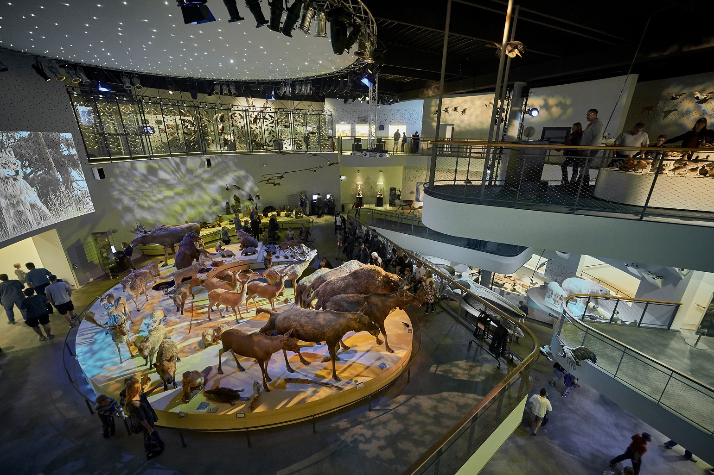
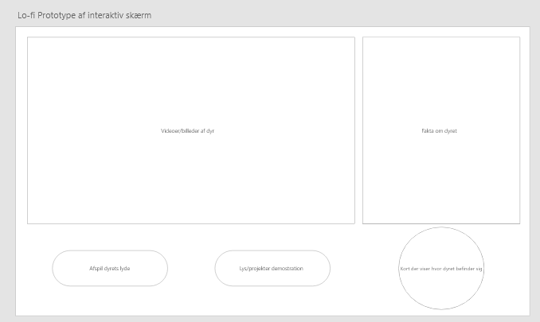
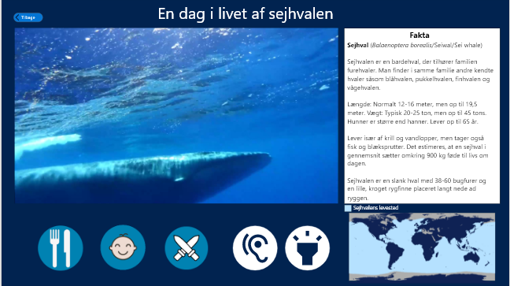
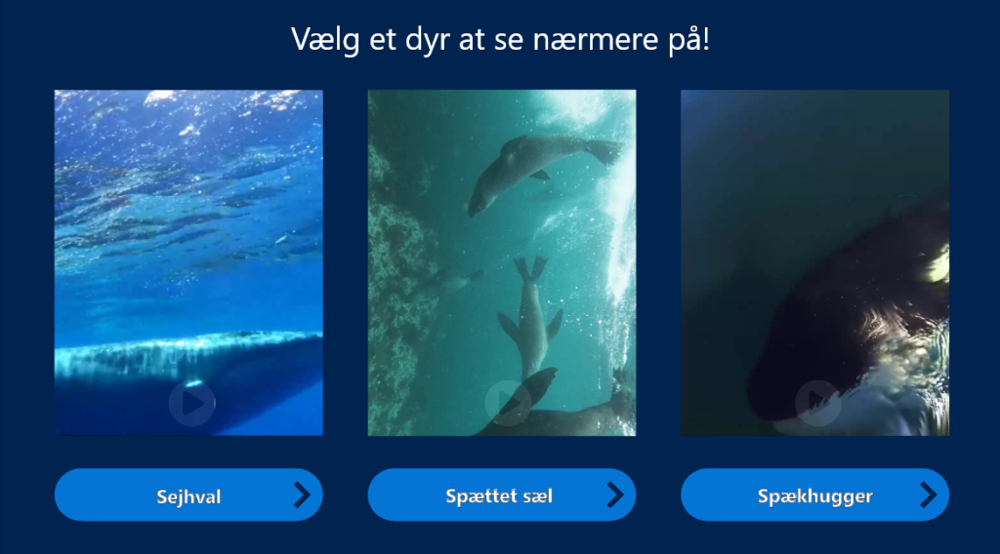
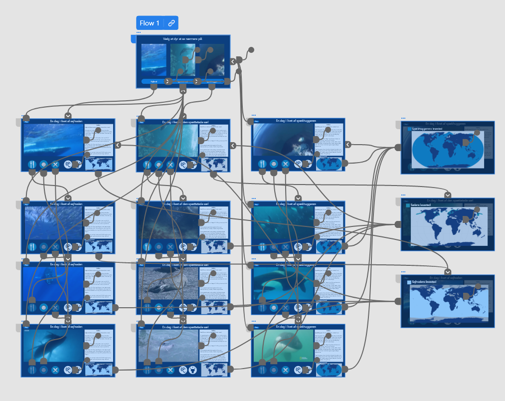

Installationsprojekt
Formålet med dette projekt var at lave et installationsprojekt til vores klient fra Naturcentret Naturama.

Vi startede i gruppen her med at lave masse research omkring andre udstillinger således at vi kunne få inspiration til vores egne koncepter. Man kan sige at vi de første par dage var i discovery-fasen ift. Design thinking process modellen. Efter en masse ide- og viden indsamling begyndte vi ligeså småt at gå i gang med “interpretation” af den indsamlede data. Vi fik her opstillet en persona, tone-of-voice og generel forståelse for klientens målgrupper, udfordringer, ønsker og behov.
Efter vi havde dannet os en grundlæggende forståelse, kunne vi påbegynde ideation-fasen. Her anvendte vi alt den data og viden til at genere forskellige ideer til koncepter, som skulle blive til 3 forskellige lo-fi prototyper. Vi startede ud med nogle divergente ideer, men endte med at gå med 3 forskellige koncepter som vi ville arbejde ud fra.

Efter en fremlæggelse og feedback af på vores 3 lo-fi prototyper, nåede vi til den konklusion at alle tre koncepter i en ville danne et ideelt produkt der dækker klientens behov og ønsker om at gøre udstillingerne med dyrene mere levende. Efter midtvejspitchen startede vi med at designe den primære del af vores interaktive skærm, som ser således ud:
Der blev derefter lavet en intro skærm til den interaktive skærm, hvoraf man kunne vælge imellem de forskellige dyr ved stationen som kan ses nedenfor:
Denne hi-fi prototype blev designet med C.R.A.P-principperne og klientens udfordringer, ønsker og behov i tankerne. Her er der blevet lagt vægt på især kontrasten og den farverne der skulle passe ind i centrets nedre hav etage. Kort forklaret så blev prototypen designet i Adobe XD, og konceptet indebære en interaktiv skærm der skal være lærerig og samtidig underholdende. Det opnår konceptet vha. video der viser dyrets hverdag såsom hvordan de spiser, føder eller slås. Derudover står der relevant fakta på højre side og et verdenskort der viser hvor i verden dyret lever. Yderligere er der en knap til at afspille dyrets lyde og en anden knap til at starte “lysshowet” hvor meningen bag konceptet var at det skulle lyse op med dyrets bevægelser i havet, nærmest som et hologram. Nedenunder kan hele opsætningen af artboardsene og stierne ses:
